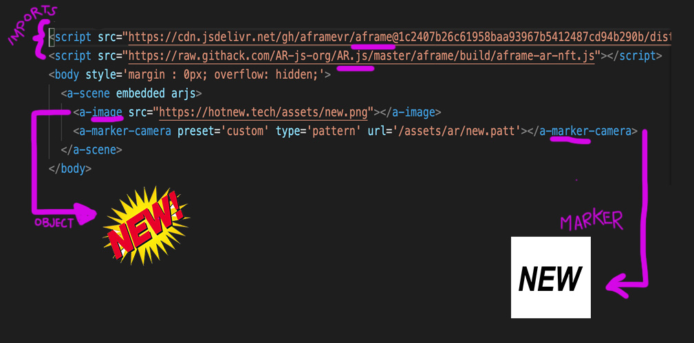
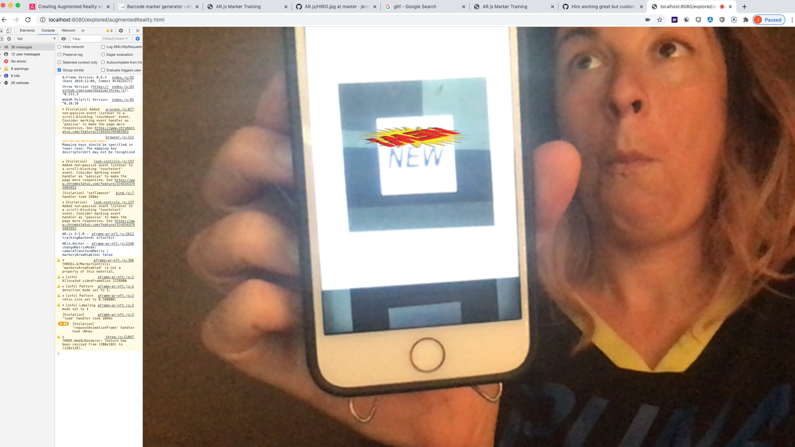

AR vs VR?
Augmented Reality plays with your current reality, adding a layer of something like an image or animation - this is the technology used to make instagram filters that turn your face into a cat.
Virtual Reality completely immerses you in the experience, like wearing an oculus headset and being under water.
XR, extended reality, or MR, mixed reality, are both bucket terms for AR and VR.
A-Frame?
A popular web framework to create VR. Check out the docs here!
AR.js?
A library for AR on the Web, enabling Image Tracking, Location based AR and Marker tracking.
We became interested in A-Frame and AR.js because:
AR has applications and potential to improve every field and industry. A-frame has a low barrier to entry to start working with web AR - in the docs promised only 10 lines of html to get started! 👏
Once you have A-frame and AR.js imported into your HTML, you need to create a scene comprised of these two main components:
Marker
The pattern or barcode that the camera identifies to activate the object.
Object
The content displayed once the marker is recognized - like an image, text, 3d object, etc.
Seeing it in action
Take a picture of the marker or print it out and put it in front of the camera that has the AR experience running. The camera will pick up the marker and then your object will display, following around your marker.
Custom Marker
We went through 9 markers until we figured out the limitations of custom markers. We ended up using this:
Custom Object
We were able to use a png for our object, but we did run into a CORS error getting it recognized. If you have this issue, we suggest going into your folder and running a python server so the resources are from the same domain. Here was our custom object:

All together, the basic code looks like this:

Here's how it looks when it works, "it works" face not included. I have a photo of the marker on my mobile device, am holding it up to the camera and the AR experience is displaying our object.
